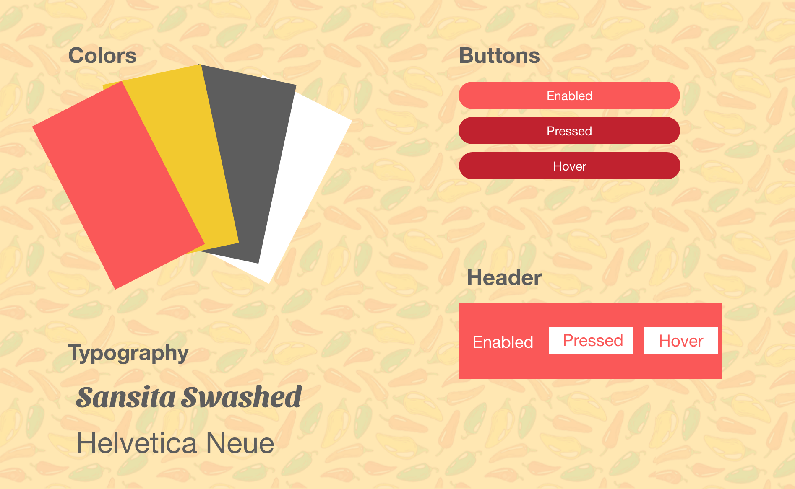

Restaurant Redesign
In this project, I utilized iterative design to reimagine a restaurant's website. My approach started with assessing the current site, looking closely at where the design hindered the user's interactions or where they were inaccessible. Next, I made a low-fidelity prototype to sketch out the layout, then filled in the aesthetics with my high-fidelity prototype.
The Original Site
Usability problems can cause the user experience to be inefficient, confusing, and unenjoyable. Accessibility problems can make the site completely unusable for some users. Below, these problems are clearly identified.
My Low-Fidelity Prototype
The purpose of the Low-Fidelity is to lay out a framework for a redesign in order to solve the problems listed above. Please see the annotations of the Desktop prototype for general notes, and the other prototype for device specific notes. These images are scrollable.
My High-Fidelity Prototype
The purpose of the High-Fidelity prototype is bring life to the site with color, animation, font, and images. For specifics on how this site is constructed, please see the annotations on the Desktop prototype. For device specific notes, please see the Tablet and Mobile prototype. These images are scrollable.
Style Guide
The style guide is a clear and concise aggregation of all the design elements of the website.
The Final Product
After all the prototyping and usability testing, please find the final site below.
Accessibility
It was important to test to make sure the redesigned site was accessible and responsive.
- Varying Screen Sizes/Font: The site properly updates when increasing the size. The flex boxes allow for wrapping of text and good alignment
- Google Translate: The site is able to be translated to other languages and because of the scaling, is able to keep the proper formatting
- WebAIM WAVE: All of the contrast flags present in the original site are no longer there
- Screen Reader: All information on the screen is readable by the screen reader
- Different Devices: Everything scales accordingly across multiple devices and keeps consistent formatting